En un principio Java fue el lenguaje de programación para Android pero
en 2017 Google nombró a Kotlin como el lenguaje oficial para Android equiparándolo con Java
Tiene soporte oficial de Google y se incorpora en Android Studio
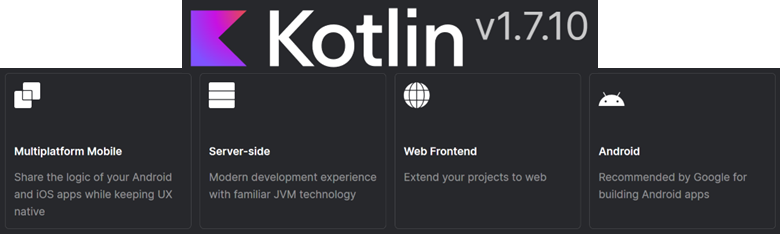 Kotlin features
Algunas de las características de Kotlin son:
Lenguaje multiplataforma y multipropósito se compila sobre JVM por lo que es totalmente compatible con Java y sus librerías (llamadas a Java desde desde Kotlin y viceversa).
Lenguaje orientado a objetos (POO)
Es un lenguaje conciso evita código innecesario (hasta un 40% menos)
Es Null Safety gestiona los nudos de forma segura y evitando errores NullPointerException
Extraoficialmente se puede decir que es como Java pero el estilo de Python (sus ventajas)
En el curso se usará Kotlin como lenguaje de programación para Android.
Al ser Kotlin un lenguaje multipropósito se pueden desarrollar aplicaciones Android, de escritorio, web, para consola..
En esta unidades se verán los fundamentos y la sintaxis de Kotlin
para más adelante poder usar el lenguaje dentro de Android Studio y desarrollar aplicaciones móviles Android.
Así, si se quieren crear scripts Kotlin y probarlos se debe tener un JDK de Java instalado.
Podriamos usar IntelliJ IDEA de JetBrains que es el IDE en el que se basa Android Studio.
Pero como ya tenemos Android Studio instalado, será esta la herramienta que utilizaremos tanto para desarrollar aplicaciones Android como para probar código Kotlin.
Para ello, tenemos varias opciones:
Cogemos un proyecto nuevo (o reutilizamos alguno anterior, aunque ensuciaremos la estructura de ficheros y no es muy buena práctica) y creamos un fichero
de Kotlin por ejemplo Test.kt y añadimos la función main para nuestras pruebas.
Fíjate que el fichero Kotlin tiene la extensión .kt Test File
Veamos un ejemplo sencillo de lectura y escritura
fun main(){
val variable:String
variable = readln()
println("Has escrito $variable")
}
Tras su ejecución espera a que escribamos algo y pulsemos intro, y lo escribe en pantalla.
Entrada/Salida Lectura y escritura
println() -> Escribe en salida estándar readln() -> Lee de entrada estándar (teclado)
Otra opción sería, también usando un proyecto, en nuestro caso el hello world inicial.
Mediante el botón derecho sobre nuestra nuestro paquete podemos crear un nuevo fichero de Scratch.
Nuevo fichero de Scratch
Seleccionamos el lenguaje de programación que queremos en nuestro caso Kotlin
Seleccionand el lenguaje Kotlin
Veamos un ejemplo:
En este caso utilizamos la función println() y como vemos a la derecha nos muestra la salida por pantalla.
Si creamos una variable nos indica de qué tipo es y si ponemos la variable nos indica qué valor tiene la variable en ese momento.
Hay que tener en cuenta qué un fichero scratch se ejecuta de arriba a abajo como podemos ver.
Guía de estilo Kotlin
En todo lenguaje de programación es importante que el código sea legible.
Las plataformas oficiales suelen crear guías de estilo para que los desarrolladores las sigan y
es conveniente revisar dicha guía para desarrollar código correctamente.
También se puede usar la opción Code -> Reformat Code (Ctrl+Alt+L) del IDE para así que se formatee el código de manera ajustada
a las guías de estilo (siempre y cuando no se haya cambiado la configuración en el IDE).
Saludo en Kotlin
Como ya se ha comentado los archivos en Kotlin tienen extensión .kt y al contrario que en Java no requieren que todo sean clases ,
puede existir funciones fuera de las clases, en concreto la función principal main no es necesario que se encuentre dentro de una clase.
La función main puede recibir argumentos pero no es necesario. Tampoco es necesario indicar la visibilidad de la función (public/static).
La función println() está disponible sin necesidad de usar el System.out de Java y
la función readln() captura como cadena lo introducido en consola por teclado
El ; Al final de cada instrucción es opcional pero por convenio no se debe utilizar y
los comentarios tanto en línea como en bloques son como en Java // y /* */
Paquete e importaciones
Como en Java, el paquete que pertenece al archivo y las importaciones que se realicen se colocará en la parte superior del archivo
Paquete e importaciones
Tipos de datos en Kotlin
Numéricos
Se indican con las palabras reservadas Int, Float, Long, Short, Byte y Double
Decimales: Double (64 bits), Float (32 bits)
Enteros: Long (64 bits), Int (32 bits),
Short (18 bits), Byte (8 bits)
Ejemplos de literales:
Ejemplos literales numéricos
Kotlin permite el uso del carácter subrayado (guion bajo, _) en los literales numéricos para facilitar la lectura de los mismos.
Ejemplos de literales:
2_000_000
44_294_051
6135_8442_0103_5610L
Caracteres
Se indican con la palabra reservada Char .
Se utiliza la codificación UTF-16 por lo que los literales se pueden indicar con el carácter o con su representación UNICODE entre comillas simples.
Ejemplos de literales :
'N' -> '\u004E'
'7' -> '\u0037'
No se pueden tratar como números.
Existen una serie de caracteres de escape
\t Tabulación
\b Retroceso
\r Retorno de carro
\n Salto de línea
\' Apostrofe
\" Comilla doble
\\ Backslash
\$ Símbolo de dólar
\u+XXXX Símbolo Unicode (4 dígitos hexadecimales)
Booleanos
Se indican con la palabra reservada Boolean.
Los valores posibles son verdadero y falso y sus literales :
true
false
Cadenas
Se indican con la palabra reservada String .
Los literales de cadenas se indican con comillas dobles:
"Hello there!"
"Rick Sanchez"
Con las triples comillas dobles la cadena admite saltos de línea, se conocen como raw strings
(cadenas en crudo) en las que cuentan todos los caracteres englobados entre las comillas.
"""Esto es un texto
que ocupa varias líneas
o se muestra en varias
lineas"""
Se pueden eliminar los espacios en blanco del principio y del final y los márgenes de la izquierda.
"""|Esto es un texto
|que ocupa varias líneas
|o se muestra en varias
|lineas""".trimMargin()
Por defecto el carácter ' | ' es el delimitador del margen pero se puede cambiar: trimMargin(">")
trimMargin()
Los string templates (plantillas de cadenas) permiten integrar las variables dentro de los strings,
así usando el símbolo $ seguido del nombre de una variable, Kotlin lo sustituirá por el valor almacenado en la variable.
Si la variable es un objeto o se quiere operar con ella se debe envolver en llaves { }.
"El descuento es un $discount %"
"El precio es ${product.price} €"
""" |Libreta de cuadros $notebookPrice €
|Bolígrafo azul $penPrice €
| Total: ${notebookPrice + penPrice}
""".trimMargin()
Se recomienda siempre el uso de string templates y de raw strings.
Aunque se pueden concatenar cadenas con el carácter + pero se debe evitar su uso.
También se debe evitar el uso de varias instrucciones seguidas con println.
Arrays
Los arrays son estructuras de datos de longitud fija que permiten almacenar varios valores del mismo tipo (números, caracteres, strings, booleanos, objetos).
1 2 3 4 5
"Rick", "Morty", "Summer"
Más adelante incidimos en ellos.
Declaración de variables
Mediante la palabra reservada var se declaran variables.
Las variables son como cajas que almacenan valores y estos valores pueden cambiar durante la ejecución del programa.
Kotlin es un lenguaje de tipado estático, esto significa que cuando una variable es de un tipo, ese tipo no puede cambiar (como Java).
Al declarar una variable se puede indicar o no el tipo de dato que se almacenara.
Si no se indica, Kotlin lo deducirá (inferred) dependiendo del tipo de dato que se asigne.
Cuando se declara una variable obligatoriamente se debe realizar una de estas dos opciones:
Indicar el tipo de dato que se almacenará.
Indicar el valor que se almacenará (Kotlin deducirá el tipo de dato).
También se puede declarar una variable realizando las dos acciones:
indicar el tipo de dato y el valor que almacenará.
Declaración de variables de tipos "simples"
Declaración variables de tipos simples
Declaración de arrays
Son objetos y se crean mediante la clase Array , por ello disponen de los métodos get y set
pero por convenciones está disponible también el uso de corchetes [ ].
Declarando Arrays
Se puede usar el constructor de la clase Array para indicar el tamaño e incluso una función lambda para rellenar los elementos
Usando función lambda
El código escrito entre llaves es una función lambda (anónima), que se explicarán más adelante.
En esta función lambda se dispone de la variable it que representa el número de iteración comenzando por cero.
Como Android Studio por defecto tiene activadas las pistas en el código (hints), si se deja un salto de línea entre las llaves se mostrará esta información.
Inicializando Arrays con función lambda
Creando un Array de los primeros 10 elementos pares
val a = Array(10){
it*2
}
for(b in a) print("$b ")
Declaración de arrays multidimensionales
Los arrays multidimensionales son arrays en los que cada elemento es a su vez un array.
Los más comunes son las matrices que se pueden representar como una tabla.
Hay varias maneras de declarar un array multidimensional en Kotlin:
Creando Arrays Multidimensionales
El acceso a los elementos de la matriz se realiza con los índices de la fila y la columna.
Acceso a matriz
El tipo Any
Todos los tipos de variables son clases y en la jerarquía de Kotlin tienen una superclase que es Any (en Java sería Object).
Se puede declarar una variable indicando el tipo Any y luego asignar cualquier tipo de dato. Esta acción puede tener utilidad en algunos casos como se verá más adelante.
Usando tipo Any
Para poder usar una variable esta debe almacenar un valor.
Existe un tipo de dato que permite dejar vacía una variable Unit (en Java sería void).
Se puede declarar una variable indicando el tipo Any y luego asignar cualquier tipo de dato. Esta acción puede tener utilidad en algunos casos como se verá más adelante.
Unit
Ámbito de las variables
El ámbito de una variable es el lugar donde se puede utilizar.
Como norma general una variable se podrá utilizar dentro de todo el bloque de código en el que se declare que se delimita por las llaves { }.
Una variable se podrá usar dentro de todo ese bloque, incluidos otros bloques que se contengan dentro.
Si una variable se declara fuera de un bloque { } se podrá utilizar en todos los archivos del proyecto.
Conversión de tipos
Si se quiere realizar una conversión de tipo de dato siempre se deberá usar un método de la clase del tipo de dato a convertir.
Por ejemplo, para convertir un Double a un Int, se deberá usar sobre la variable decimal el método toInt de la clase Double.
Esta acción además truncará el valor y se perderá la parte decimal.
Conversión de tipos
Los métodos para la conversión de tipos suelen ir precedidos de to:
Cuando se pide un dato por teclado este siempre es una cadena, así que si se pide un número se debe convertir a entero o decimal según convenga:
var number = readln().toInt()
Declaración de constantes
Se usa la palabra reservada val para declarar constantes.
Su uso es similar al de las variables declaradas con var con la excepción de que una vez asignado un valor ya no se podrá cambiar durante la ejecución.
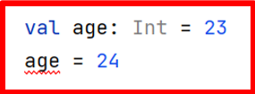 Error en compilación
Aunque sí que se pueden asignar durante la ejecución del programa por ejemplo tras pedir un dato al usuario.
Justo después de definirla, con lo que deberíamos hacerlo en la misma línea
inicialización con val
Los array y todos los objetos se pueden declarar como val y posteriormente cambiar los valores que almacenan.
Esto es debido a que son objetos y como val no se podrá cambiar la referencia que almacena, aunque sí se podrán cambiar los valores del objeto.
val con arrays
Se puede usar la palabra reservada const previamente a la declaración con val
para declarar constantes de valores conocidos.
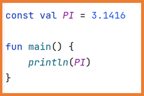 Constantes
Estas constantes no podrán ser asignadas en tiempo de ejecución por eso deben de estar fuera de las funciones.
Error declarando constante
Las constantes con const sí se pueden declarar dentro de objetos declarados como singleton
(clase con una única instancia que se verán más adelante).
const dentro de objetos
Operadores
Permiten crear expresiones. Son similares a los de Java:
De signo: + -
Aritméticos: + - * / %
Asignación: = += -= *= /= %=
Incremento: ++ -- (puede ser pre-incremento o post-incremento)
Relacionales: == != < > <= >=
Lógicos: && || !
A nivel de bit: and or xor inv shl (desplazamiento <-) shr (desplazamiento ->)
Uno de los errores más comunes y temidos que puede producirse cuando se programa es el odiado NullPointerException.
Este error ocurre cuando el programador no inicializa un objeto o por alguna razón no se ha inicializado.
Por defecto Kotlin no permite asignar null a las variables para evitar posibles errores.
Error asignando null a una variable
Pero Kotlin sí que tiene soporte para el valor null de forma nativa.
Para declarar variables que puedan almacenar null en la declaración se debe usar el símbolo ?
detrás del tipo de dato de la variable.
Kotlin evitará realizar acciones que puedan dar error si la variable es null
Nos previene de posibles nulos
Como en Java, para las variables que pueden almacenar null se puede hacer una comprobación previa antes de intentar acceder a ella.
Con el operador ? también permite realizar las comprobaciones anteriores de una manera más sencilla y reduciendo código.
Operador ?
Este operador permite comprobaciones simultaneas.
Operador Elvis ?:
El operador Elvis ?: permite ofrecer un valor por defecto cuando una variable almacene el valor nulo.
Operador Elvis
El uso más común es conseguir un valor distinto de null cuando una propiedad es null o un método devuelve null.
Este operador también se puede usar para lanzar una excepción.
Lanzando excepciones con el operador Elvis
Si se necesita ejecutar varias instrucciones tras el operador Elvis, estas se deberán incluir en un bloque de instrucciones tipo run { } (se explicará con detalle más adelante).
Se debe tener en cuenta que la última instrucción del bloque debe ser el valor a asignar en el caso de que la variable sea null.
El operador !!
Cuando se esté muy segurode que una variable que puede almacenar null no lo almacena,
se puede utilizar el operador !! para evitar la comprobación de Kotlin.
En este caso si la variable almacena null se lanzará la excepción NullPointerException
Este operador suele aparecer en migraciones de Java a Kotlin.
La filosofía de Kotlin es contraria a su uso. Es decir, ¡no se se recomienda usarlo!
Expressiones Regulares
En todo lenguaje de programación es necesario comprobar si los valores introducidos por el usuario cumplen unas reglas específicas.
Una acción muy típica es comprobar si el usuario ha introducido un valor y si ese valor es una cadena vacía o no.
Estas comprobaciones en ocasiones pueden no ser suficientes para los requisitos del programa, en ese caso se deben usar expresiones regulares.
Las expresiones regulares son patrones de caracteres que permiten comprobar si una cadena de caracteres se ajusta al patrón o no.
Ejemplos típicos de comprobaciones con expresiones regulares:
Que un nombre no tenga números.
Que tenga una longitud concreta.
Que se siga un orden en los caracteres (DNI -> 8 números y 1 letra).
Que sea un email.
...
Las expresiones regulares existen en muchos lenguajes de programación así que es importante conocer su funcionamiento.
Para crear una expresión regular en Kotlin se utiliza la clase Regex:
val checkDNI = Regex("expresión_regular")
Se permite indicar modificadores a la expresión regular:
val check = Regex("expresión_regular", RegexOption.IGNORE_CASE)
El diseño de expresiones regulares es una disciplina cuyo nivel de dificultad aumenta conforme se quieren comprobar patrones más complejos.
A continuación, se verá una pequeña guía del uso de las expresiones regulares que servirá para aprender a utilizarlas de una manera básica.
Agrupación
[ ] [abc] contiene cualquier carácter de entre los indicados.
[^ ] [^abc] contiene cualquier carácter que no sea de los indicados.
[ - ] [0-9] contiene cualquier carácter que se encuentre en el rango.
[^ - ] [^A-B] contiene cualquier carácter que no esté en el rango.
( | ) (x|y) contiene uno de los caracteres (separador |).
Cantidad de caracteres
{ } a{3} contiene exactamente 3 'a' seguidas.
{ ,} a{3,} contiene 3 o más 'a' seguidas.
{ , } a{3,5} contiene 3, 4 o 5 'a' seguidas.
* a* contiene 0 o más 'a'. Similar: a{0, }
+ a+ contiene 1 o más 'a'. Similar: a{1, }
? a? contiene 0 o 1 'a'. Similar: a{0,1}
Inicio – fin
^ ^hola empieza con "hola".
$ hola$ acaba con "hola".
^ $ ^hola$ exactamente "hola".
Otros
\\s el carácter espacio en blanco.
\\S cualquier carácter que no sea espacio en blanco.
\\w una letra.
\\C no es una letra.
\\d un dígito. Similar: [0-9]
\\D no es un dígito. Similar: [^0-9]
Ejemplos de expresiones regulares en Kotlin
// tiene 4 minúsculas
"[a-z]{4}"
// tiene 8 caracteres: letras y/o números
"[a-zA-Z0-9]{8}"
// 7 u 8 dígitos seguidos de 1 letra (DNI)
"^\d{7,8}\w{1}$"
// conjunto de letras, seguidas de arroba seguida, seguidas de un
// conjunto de letras, seguidas de un punto y seguido de 2 o 3
// letras patrón simple para un email: rick_sanchez@mail.com
"^[a-z_.]+@[a-z]+\.[a-z]{2,3}$"
Para comprobar si una variable cumple un patrón establecido en una expresión regular se pueden utilizar tanto métodos de la clase String como métodos de la clase Regex:
La clase Regex tiene más métodos con diferentes funcionalidades, entre ellos:
replace
find
Para crear expresiones regulares se pueden consultar Cheat Sheets:
https://quickref.me/regex
También existen herramientas para comprobar el funcionamiento de una expresión regular:
https://regex101.com/
Excepciones
Las excepciones se capturan con bloques try – catch de la misma manera que en Java.
Son instrucciones que permiten alterar el flujo normal de las instrucciones del programa. Son muy similares a las de cualquier otro lenguaje.
if
if – else
if – else if – else
when
for
while
do – while
repeat
Guía de estilo para las llaves { }:
Las llaves no son necesarias para ramas de when ni expresiones de if
que no tengan más de una rama de else y que quepan en una sola línea.
Las llaves son necesarias para cualquier rama de if, for o when, do,
y para sentencias y expresiones de while , incluso cuando el cuerpo está vacío o contiene una sola instrucción.
if, if-else y if-else if-else
Si se puede escribir en una sola línea no se ponen las llaves y es preferible escribirlo así.
sentencias if - else
if como una expresión
La instrucción if se puede utilizar como una expresión, por ejemplo para asignar un valor a una variable como en el ejemplo ya visto:
if como expresión
En este caso se puede escribirla expresión de la siguiente forma, siendo obligatorio incluir la rama del else.
if como expresión 2
Si se usa como una expresión la rama de else es obligatoria.
Al usar la instrucción if como expresión también se pueden utilizar las llaves para realizar varias instrucciones,
en este caso la última instrucción de las llaves debe ser el valor a asignar.
Si se usa como expresión y además, se usan bloques de código la última expresión debe ser el valor a asignar sin necesidad de igualar a la variable.
when. Una instrucción por rama
when
Condición con múltiples ramas (similar a switch de Java):
Si hay varias instrucciones en alguna rama, se debe poner las llaves a todas las ramas:
when. Varias instrucciones por rama
Con when se pueden agrupar valores:
También se pueden usar expresiones para evaluar:
Se puede usar in o !in para usar rangos y colecciones para evaluar:
Se puede evaluar si la variable es de un tipo o no con is o !is :
Hay casos en los que la rama else es obligatoria, por ejemplo si el resultado de la expresión a evaluar es un booleano:
Si no se indica ninguna variable para evaluar when servirá para sustituir bloques if-else:
Se puede usar como expresión, en ese caso la rama else es obligatoria a menos que el compilador pueda comprobar que se están cubriendo todas las opciones:
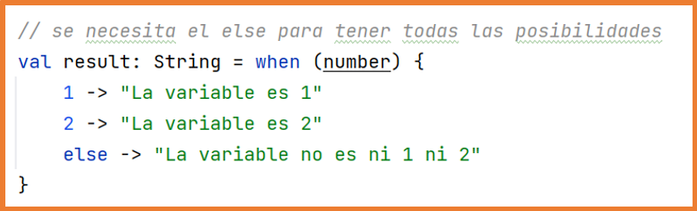 Se necesita rama else No se necesita rama else, el compilador sabe que no hay más opciones.
for
Los bucles for son un poco diferentes en Kotlin debido a que utilizan rangos, progresiones y colecciones para las iteraciones.
Rangos: serie ascendente/descendente de Int, Long o Char.
Progresiones: como un rango pero con un parámetro que indica el paso entre los elementos de la progresión.
Colecciones: conjuntos de elementos como arrays.
rangos y progresiones
Existen diferentes maneras de crear rangos y progresiones. En la imagen de la izquierda se muestra cómo se crean,
pero por defecto Android Studio tiene activadas las pistas en el código (hints). Una vez creado el rango se verá como en la imagen de la derecha mostrando más información.
Todos los rangos se pueden usar como progresiones con paso 1 por defecto o se pueden convertir en progresiones indicando el paso explícitamente como en el último ejemplo.
bucles for para rangos, progresiones y colecciones
Los bucles for utilizan rangos, progresiones y colecciones y para recorrerlos se indica con la palabra in .
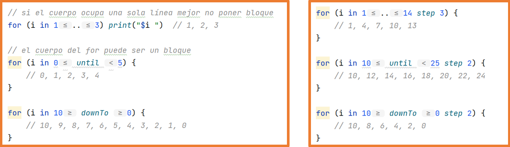
También funciona con rangos de caracteres:
For con rango de caracteres
La instrucción for permite recorrer objetos que provean un iterator como strings, listas, arrays o colecciones.
Se puede acceder a la posición de dos maneras.
while y do-while
while: primero comprueba la condición, es posible que no se ejecute el cuerpo
while
do-while: la condición se evalúa después de ejecutar el cuerpo, así el cuerpo se ejecuta al menos una vez.
do-while
repeat
La función repeat sirve para repetir el código del cuerpo las veces indicadas, internamente ejecuta un bucle for.
repeat
break, continue y return
Kotlin dispone de las tres maneras típicas de romper el flujo de un bucle.
return: finaliza el bucle y la función donde se encuentre el mismo.
break: finaliza el bucle donde se encuentre.
continue: finaliza la iteración actual del bucle donde se encuentre.
En Kotlin las instrucciones se pueden etiquetar mediante el carácter @ de la siguiente manera nombreEtiqueta@
de esta manera se puede romper el flujo de cualquier serie de bucles anidados.
Asi, poniendo etiquetas, un break finalizará el bucle al que esté etiquetando.
break etiquetas
Las colecciones son un tipo de dato que permiten almacenar un número variable de elementos, cero o más.
Normalmente, en una colección se almacenarán elementos del mismo tipo de dato.
Se pueden almacenar datos de diferente tipo pero en este caso se deberá tener especial cuidado cuando se use la colección.
Además, las colecciones pueden almacenar el valor null en alguno de sus elementos.
Existen cuatro tipos de colecciones en Kotlin:
Array:
Colección de elementos.
Se accede a los elementos mediante el índice de su posición.
Se pueden repetir elementos.
Dos arrays no son iguales aunque contengan los mismos elementos en la misma posición
List:
Colección ordenada de elementos.
Se accede a los elementos mediante el índice de su posición.
Se pueden repetir elementos.
Dos List son iguales si contienen los mismos elementos y en la misma posición.
Set:
Colección de elementos sin orden.
No se pueden repetir elementos dentro de un Set.
Dos Set son iguales si contienen los mismos elementos sin importar el orden.
Map:
También llamados diccionarios.
Un Map es un conjunto de pares clave-valor (key-value), no se puede repetir la clave.
Dos Map son iguales si contienen los mismos pares clave-valor sin importar el orden.
Para las List, los Set y los Map, Kotlin dispone de dos versiones.
Immutable:
No se permite ni añadir ni eliminar elementos a la colección.
No se permite modificar ningún elemento de la colección.
Mutable:
Se permite añadir, eliminar y modificar los elementos de la colección.
List y MutableList
Sean mutables o no se pueden declarar tanto con val como con var.
Es su funcionamiento interno el que permite que se puedan modificar o no.
Creación de list 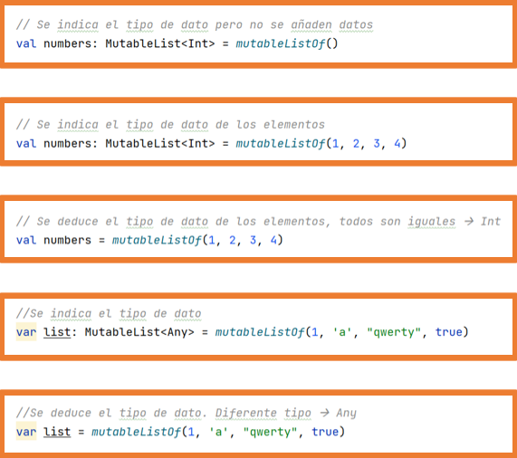 Creación de mutablelist
Algunas operaciones sobre List y MutableList
Las operaciones que modifican solo son aplicables a MutableList
Operaciones sobre list y mutablelist
Set y MutableSet
set
set
MutableSet
MutableSet
Algunas operaciones sobre Set y MutableSet
Las operaciones que modifican solo son aplicables a MutableSet
Set y MutableSet
Map
Creación de Map
Creación de Map
Creación de MutableMap
Creación de MutableMap
Algunas operaciones sobre Map y MutableMap
Las operaciones que modifican solo son aplicables a MutableMap
Operaciones sobre Map y MutableMap
Operaciones sobre colecciones
Algunas operaciones sobre colecciones devuelven un valor booleano que indica si la operación se ha realizado correctamente o no.
Como por ejemplo add y remove.
Si se quieren conocer todas las operaciones disponibles para List, Set y Map ya sean mutables o solo lectura se debe consultar la documentación oficial.
Existen operaciones sobre las colecciones que permiten realizar operaciones a todos los elementos de la colección y devuelven una nueva colección con los resultados.
Se podría decir que "recorren" la colección.
Estas operaciones admiten una función lambda lo que significa que se deben usar llaves para delimitar las instrucciones. (En la declaración de arrays se vio también el uso de una función lambda, más adelante se explican por completo).
Dentro de la función lambda estará disponible itcomo el elemento actual.
forEach
Recorre todos los elementos de la colección pudiendo realizar acciones sobre ellos.
forEach
filter
Devuelve la colección con los elementos que cumplan la condición.
filter
map
Devuelve la colección aplicando una transformación a cada elemento.
map
Secuencias
Las secuencias permiten optimizar las operaciones sobre las colecciones.
Sin seccuencias
En el ejemplo anterior las dos operaciones se realizan sobre todos los elementos de la lista generando listas intermedias que no desaparecen hasta acabar todas las operaciones.
Este comportamiento cuando la colección tiene muchos elementos y/o se realizan muchas operaciones sobre la colección va a penalizar en el rendimiento de la aplicación.
Para mejorar este comportamiento se puede convertir la colección a una secuencia, realizar todas las operaciones y finalmente volver a generar la colección.
La secuencia no genera colecciones intermedias.
Secuencia
Las secuencias solo generan sus elementos cuando se utilizan por ello permiten generar una cantidad de valores infinitos que posteriormente se pueden utilizar.
Se debe tener cuidado porque se podría bloquear la aplicación esperando a que la secuencia finalice.
takeWhile
Funciones
Funciones incluidas en el sistema
Como en todo lenguaje de programación, Kotlin incorpora una gran cantidad de funciones ya programadas listas para usar.
Ya se han visto algunas anteriormente: println, toInt, toString…
Por ejemplo, para arrays se tienen disponibles entre otras
En kotlin las funciones se declaran con la palabra fun .
A continuación, se muestra un ejemplo de una función y de su llamada.
Creación de función y llamada
Las funciones pueden no recibir parámetros ni devolver valores.
Si no se indica valor de retorno se devuelve el tipo Unit que es equivalente a void de otros lenguajes de programación.
Si no se devuelve nada se puede omitir : Unit.
Los parámetros de entrada se separan por comas y se permite el uso de la llamada trailing comma (coma final).
Trailing comma
Los parámetros de entrada son inmutables, no se puede cambiar su valor desde el cuerpo de la función, es como si se declararan con val.
Para modificarlos se debe crear una copia.
Parametros de entrada inmutables
Si la función se puede escribir en una sola línea se pueden quitar las llaves y añadir el símbolo = antes del cuerpo.
Otras Funciones
Otras funciones
Parámetros con nombre
Se puede usar el nombre de los parámetros en las llamadas a la función y así cambiar el orden de los parámetros.
Igual que con los intervalos Android Studio muestra las pistas en el código (hints) para indicar el nombre del parámetro.
Valor por defecto
Se permite definir un valor por defecto a los parámetros de entrada y de este manera omitir esos parámetros si se quiere.
Valor por defecto parámetros entrada
Si se usa valor por defecto en la definición de la función y nombres de parámetros en la llamada a la función, se pueden omitir parámetros intermedios en la llamada.
Omitiendo parámetros intermedios
Si se usan parámetros con y sin nombre en la llamada, los argumentos con nombre deben de ser los últimos a no ser que ocupen su lugar.
Número variable de parámetros
Es posible declarar un número variable de parámetros.
Para ello se utiliza un parámetro con la palabra vararg .
Habitualmente suele ser el último parámetro. Si no es el último, los siguientes tendrán que pasarse usando su nombre.
Con un intArray o una colección que se pueda convertir a intArray se puede usar *
(operador spread) para pasarlo completamente como parámetro vararg.
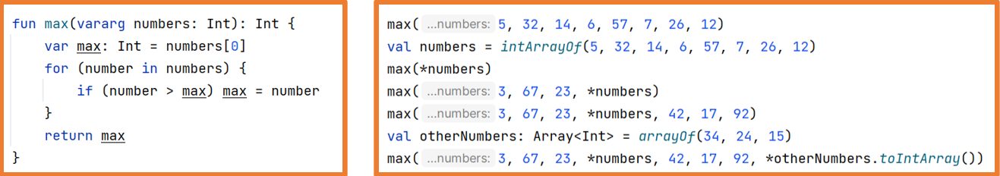
Sobrecarga de funciones
Kotlin permite la sobrecarga de funciones aunque estas no estén definidas en una clase.
Sobrecarga de funcioness
En ejemplos anteriores se ha creado la función max que como ya existe se realiza sobrecarga, pudiendo ver la función propia y las del sistema.
Ámbito de las funciones
Igual que con las variables el ámbito de una función indica dónde se puede utilizar la función.
En Kotlin existen los siguientes tipos de funciones:
Nivel superior (top level)
Local
Miembro
De extensión
Según el tipo se podrá usar en una parte de código u otra.
Nivel superior (top level)
Se definen sin estar dentro de ningún bloque { } o clase.
Su uso suele ser como biblioteca de funciones, en este caso en un archivo se incluyen varias funciones de nivel superior que se podrán utilizar en cualquier parte.
Se podrán usar en todo el archivo propio y en el que se importe.
Top leve functions
Local
Se definen dentro de otra función y se podrá usar en todo el bloque { } de esa función, incluso desde otras funciones locales de la misma función padre.
Debe estar definida antes de cualquier llamada a ella.
Pueden usar las variables locales de la función padre.
Funcion Local
Función Miembro
Son las funciones que se definen dentro de las clases u objetos.
Son lo que en la programación orientada a objetos se llaman métodos.
Se estudian en el punto siguiente POO (Programación Orientada a Objetos).
Funciones de extensión
Kotlin permite extender la funcionalidad de las clases añadiendo funciones a ellas.
Estas funciones solo existen en el ámbito en el que se definen.
Funciones de extensión
Programación Orientada a Objetos
Como se indicó al principio de la unidad, Kotlin busca ser conciso y evitar escribir demasiado código.
Esta característica es muy visible cuando se desarrollan clases.
Se va a estudiar tanto la manera más tradicional de codificar clases como en Java y la manera aconsejada por Kotlin.
Para crear clases se usa la palabra reservada class como en Java.
Kotlin permite que en un mismo archivo .kt se definan más de una clase públicas (esto no se permite en Java).
Si en un archivo .kt solo se define una clase, entonces el nombre del archivo debe ser el nombre de la clase.
Si en un archivo .kt se definen varias clases, entonces se debe buscar un nombre representativo.
En Kotlin todas las clases hereda de la clase Any (en Java es Object).
La clase Any define tres métodos que heredarán sus hijas:
equals -> indica si un objeto es igual a otro
hashCode -> devuelve el código hash de un objeto
toString -> devuelve la representación en String de un objeto
Ejemplo de definición de clase en Kotlin:
Defenición de clase
Kotlin es tan conciso que una clase sin cuerpo se puede definir así:
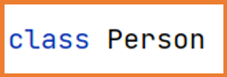 Definición de clase concisa
Aun sin cuerpo se puede instanciar un objeto de esta clase:
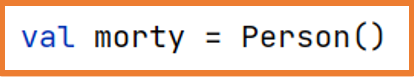 Instancia de clase sin cuerpo
Se puede observar que la estructura de definición de una clase es similar a la usada en Java.
Los getters y setters se deben definir tras cada propiedad.
El constructor se define con la palabra constructor.
Getters, setters, constructor
Su uso también es similar a Java:
Uso de cases
Si no se indica lo contrario las clases, propiedades y métodos por defecto son públicas (public).
Existen los modificadores de visibilidad:
public
private
protected
internal -> visible en el mismo módulo (paquete)
Kotlin permite ahorrar código usando funciones de expresión (en una línea):
Kotlin permite ahorrar código ya que los getters y setters son implícitos:
Kotlin permite ahorrar código incorporando las propiedades en la definición de la clase haciendo que el constructor sea implícito:
Constructores
Con esta estructura se tiene el constructor, los getters y los setters
Constructor primario
Si no se van a realizar acciones específicas en el constructor, los getters o los setters, esta sintaxis permite ahorrar mucho código.
Utilizando esta sintaxis este constructor se denomina constructor primario.
Los constructores que se incluyen en el cuerpo de la clase se denominan constructores secundarios.
Los constructores se declaran con la palabra reservada constructor .
Existe la sobrecarga de métodos como se puede ver con el constructor.
Si una propiedad no aparece en algún constructor deberá tener un valor asignado por defecto. Constructores secundarios 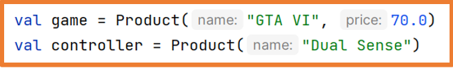 Usando constructores secundarios
Si se usan combinados el constructor primario con constructores secundarios, se debe usar la palabra this en los constructores secundarios.
Mediante this se llama al constructor primario (equivalente a super en Java).
Puede no haber constructores.
En ese caso en la declaración de las propiedades se debe asignar un valor.
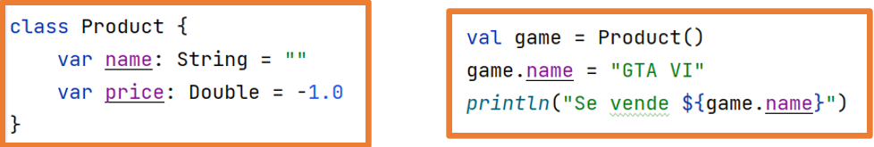
Si se usa el constructor primario pero se requiere realizar acciones sobre las propiedades se debe usar un bloque de instrucciones init.
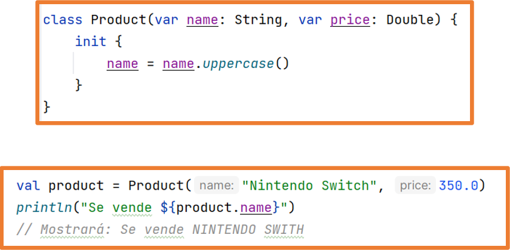
Funciones miembro
Se pueden definir funciones miembro (métodos) en las clases.
Función miembro si cuerpo
La misma función definida de manera extendida:
Función miembro con cuerpo
Si se sobrescribe una función heredada (ya existe en la clase madre), se debe añadir la palabra override en la definición de la función.
Sobrecarga
Evidentemente se puede combinar todo lo anterior:
Constructor primario
init para realizar acciones en el constructor primario
Constructor secundario
getters y setters implícitos
Sobrecarga de funciones heredadas
Todo combinado
Si se quiere cambiar el tipo de acceso de las propiedades de la clase simplemente se debe indicar delante de su declaración.
Al ser implícitos, los getters y los setters tendrán el mismo tipo de acceso que se defina para las propiedades, y esto solo se puede cambiar a más restrictivo.
Este funcionamiento puede ser un problema ya que si se quiere dotar a las clases de la encapsulación (característica típica de la POO) no se tendrá acceso a las propiedades cuando se usen los objetos de la clase.
fun main(){
val p1 = Producto(name= "Mesa")
println(p1.name) //No tenemos acceso lectura
p1.name = "Silla" //No tenemos acceso a escritura
println(p1.price) //Si deja acceder para lectura
p1.price = 20.0 //No deja escritura
println("Bye world")
}
class Producto(private var name: String){
var price:Double = 10.0
get() = field //En este caso no haría falta
private set
init{
name = name.uppercase()
}
constructor(name:String, price:Double):this(name){
this.price = price
}
override fun toString(): String {
return "$name: $price €"
}
}
Para solucionar este problema se pueden crear métodos públicos para acceder a las propiedades privadas.
Aunque esta solución va en contra de la filosofía de Kotlin de ahorrar código.
Como ya se ha visto anteriormente, una vez declarada una clase su uso es igual que en Java.
El acceso a las propiedades y las funciones se realiza mediante la notación de punto:
Notación de punto
Enum class en Kotlin
Las enum class permiten definir un conjunto de constantes relacionadas entre sí.
Es una manera segura de disponer de los valores sin temor a errores.
Enum Class
Data class en Kotlin
Las data class son una manera de modelar los datos y la finalidad de sus objetos es simplemente almacenar datos.
Son clases muy simples que solo contienen atributos.
Se utilizan para interactuar con otras clases o con API's externas.
Para declarar una clase de este tipo se usa la palabra data.
data class
Kotlin provee a las data class de una serie de funciones de utilizad o características:
equals(): permite comparar dos objetos de la clase. Compara el contenido de los atributos
hashCode(): código hash (este código se usa en la función anterior).
copy(): permite realizar una copia del objeto. Atributo a atributo pero son objetos distintos
toString(): genera un string legible con los datos del objeto. No muestra la referencia a memoria
component1(), component2()…: get a cada propiedad del objeto en su orden de declaración
ejemplo uso data class
Las propiedades que no aparezcan en el constructor primario no se beneficiarán de las características de las data class.
Por ejemplo, al usar toString solo aparecerán las propiedades que estén en el constructor primario.
Mediante la función copy se pueden copiar objetos completos y durante la copia se pueden cambiar valores de las propiedades.
copy data class
Los objetos de una data class se pueden deconstruir de manera que se puede extraer el valor de sus propiedades a variables.
Si hay algún valor que no se quiera se debe poner el carácter _ en su lugar.
Si los valores que no se quieren están al final de la lista basta con no ponerlos.
Deconstrucción de un data class
Funciones de Extensión
Kotlin permite extender la funcionalidad de las clases existentes
ya sean del sistema o propias sin uso de la herencia incluso si la clase existente es final.
Las funciones de extensión se definen fuera de la definición de la clase por ello solo se podrán utilizar en el ámbito en el que se definan.
Aunque la función de extensión se define fuera de la clase es como si se hubiera definido desde dentro comportándose como un método más de la clase, pudiendo hacer uso tanto de las propiedades y los métodos si los hay aunque sean privados.
En el apartado de las funciones ya se vio un ejemplo:
Funciones de Extensión
Estas funciones se definen como otras funciones pero usando el nombre de la clase que se quiere extender.
Función de extensión de una clase existente:
Función de extensión de una clase propia
Un uso típico de las funciones de extensión se da con las colecciones.
Gracias a una función de extensión se puede realizar una acción sobre cada uno de los elementos de la colección.
cuya salida sería:
Una función de extensión no puede sobre escribir a una función miembro.
Una función de extensión sí que puede sobrecargar a una función miembro.
Aunque no se muestre un error, si se intenta sobrescribir una función miembro mediante una función de extensión, en ejecución siempre se llamará a la función miembro.
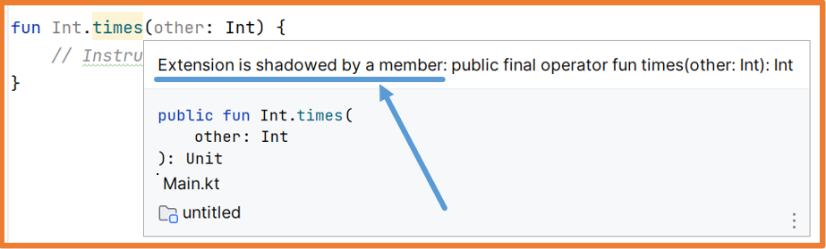
Singleton
En Kotlin se pueden crear singleton que son objetos únicos en su clase, esto significa que no podrá haber más instancias de esa clase.
object Author{
var name = "Carlos Tarazona"
var company = "2DAM"
var date = Date()
override fun toString(): String {
return """$name ($company)
|$date""".trimMargin()
}
}
Se le pueden añadir funciones de extensión como con cualquier otra clase.
Si se declaran de manera global en el archivo .kt se podrán añadir funciones de extensión como con cualquier otra clase.
Herencia
En Kotlin por defecto todas las clases son finales, lo cual significa que no puede haber herencia si no se indica explícitamente.
Para indicar que una clase puede ser súper clase se debe usar la palabra reservada open.
Si se usa el constructor primario y los getters y setters por defecto:
Herencia
Con este código se tiene:
La clase Product con el constructor, los getter y los setters
La clase Monitor con su constructor que llama al constructor de la clase padre, y hereda los getter y los setters de la clase padre.
Se pueden añadir propiedades y métodos nuevos.
En la clase hija automáticamente se crea el constructor primario que llamará al constructor de la clase madre.
Además, se ha creado un constructor secundario que mediante this llamará al constructor primario.
Clases abstractas
Para declarar una clase abstracta se usa la palabra abstract delante de la palabra class .
De una clase abstracta no se pueden instanciar objetos.
Funciones de alcance
Kotlin ofrece las llamadas Scope functions que permiten ejecutar un bloque de código en el contexto del objeto que las llama.
Al ejecutarse en el contexto del objeto que las llama, dentro del cuerpo de la función está disponible dicho objeto.
Existen cinco funciones de alcance:
let
run
with
apply
also
Estas funciones devuelven un valor pero no es necesario capturarlo (guardarlo) en ninguna variable.
Función
Uso
Contexto
Devuelve
let
Ejecutar bloque de código asegurándose de que el objeto no es null.
Propio objeto accesible con it
Resultado de la última instrucción
apply
Configuración de un objeto.
Propio objeto accesible con this
Propio objeto
run
Configuración de un objeto y ejecución de instrucciones sobre él.
Propio objeto accesible con this
Resultado de la última instrucción
run
Ejecutar instrucciones cuando se requiere una expresión, se usa sin que sea llamada desde un objeto.
-
Resultado de la última instrucción
also
Seguir realizando instrucciones sobre el objeto.
it
Propio objeto
with
Agrupar llamadas a funciones de un objeto.
this
Resultado de la última instrucción
Todas las funciones de alcance se utilizan con un bloque de llaves { } (función lambda).
Android Studio muestra las pistas en el código (hints) para ayudar a entender cómo funciona cada una de ellas.
Funciones de alcance. Hints
let
Contexto: el objeto desde el cual se llama, accesible con it.
Devuelve: el resultado de la última instrucción.
let
El uso de let asegura que el objeto no será null antes de ejecutar las instrucciones.
let 2
En el caso de que el objeto producto sea null el bloque let no se ejecutará.
run
Tiene dos usos:
Llamada desde un objeto como let, pero no controla si la variable es null.
El contexto: el objeto desde el cual se llama, accesible con this. No es necesario poner this. para acceder a las propiedades.
Devuelve: el resultado de la última instrucción.
run 1
Llamada sin usar objeto.
El contexto: no hay contexto.
Devuelve: el resultado de la última instrucción.
also
Permite realizar acciones extra (also = además) sobre el objeto que la llama.
El contexto: el objeto desde el cual se llama, accesible con it .
Devuelve: el propio objeto (se hace automáticamente).
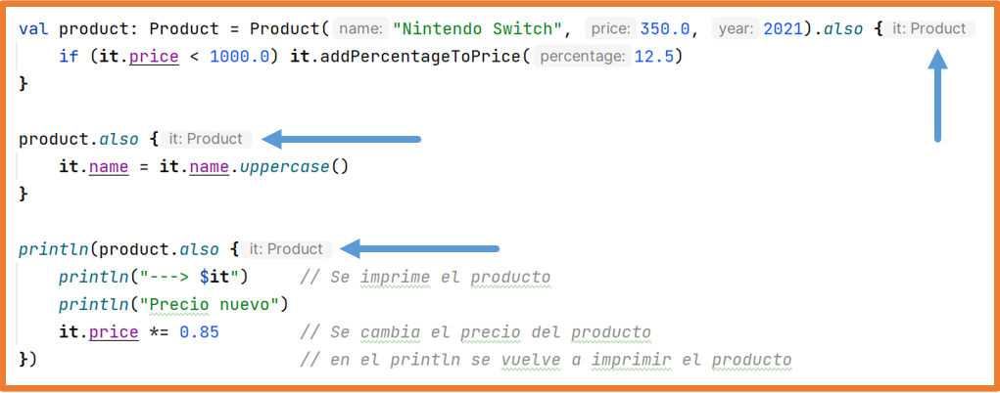 also
apply
Se utiliza para configurar (asignar valores) a un objeto.
El contexto: el objeto desde el cual se llama, accesible con this .
Devuelve: el propio objeto (se hace automáticamente).
apply
with
Permite agrupar acciones sobre un objeto.
El contexto: el objeto desde el cual se llama, accesible con this .
Devuelve: el resultado de la última instrucción.
Devuelve el resultado de la última instrucción
Funciones Lambda
Como norma general una función se debe declarar y se le debe asignar un identificador para poder usarse:
Las funciones lambda, también llamadas funciones anónimas o funciones flecha son funciones que no están declaradas (no tienen identificador)
y se utilizan como una expresión.
Las funciones lambda se escriben entre llaves { }, pueden tener parámetros o no y deben tener un cuerpo.
Si no tiene parámetros se deben poner directamente las instrucciones.
El resultado de la última instrucción de una lambda se devolverá (SIN RETURN),
si la función tiene varias instrucciones Android Studio lo indica con las pistas en el código (hints).
Si no aparecen las pistas de código (hints) en Android Studio se pueden activar desde la configuración File Settings (CTRL+ALT+S):
inline hints
Si tiene parámetros, para separarlos del cuerpo se utilizan los caracteres -> de ahí que se les conozca también como funciones flecha.
En las lambdas escritas anteriormente es Kotlin quien deduce los tipos de datos.
Se pueden indicar explícitamente los tipos de datos:
En este caso si la lambda solo tiene un parámetro se puede omitir y utilizar it:
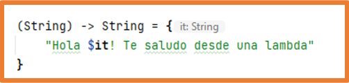
Las funciones lambda se utilizan como una expresión, esto significa que deben de estar asignadas a algún elemento.
Si se asigna una lambda a una variable su uso es el mismo que con una función normal.
Esto no aporta ninguna funcionalidad nueva.
Las funciones lambda se pueden pasar como parámetros a otras funciones.
Esto sí que aporta una funcionalidad no vista hasta ahora y es una práctica muy extendida actualmente en muchos lenguajes de programación y frameworks.
Gracias al paso de lambdas como parámetro en funciones se puede:
Crear funciones callback.
Devolver diferentes respuestas desde una función.
Ofrecer al programador que introduzca su propia lógica.
Sintaxis de paso de función lambda como parámetro de una función:
En el caso de que la lambda no reciba parámetros ni devuelva nada:
fun nameOfFun(parameter1: Type, lambdaName: () -> Unit) { … }
Crear funciones callback
Las funciones callback permiten asegurarse que un conjunto de instrucciones se ejecuta después de una instrucción concreta.
Su uso es muy típico cuando existe ejecución asíncrona de instrucciones, hilos…
Las siguientes funciones sobrecargadas reciben una función lambda que se ejecuta al final de todo el cuerpo de la función doLogin:
callback
La función duguin anterior se puede llamar de la siguiente manera
Llamada a una función de orden superior (contiene lambda)
Si la función lambda es el último parámetro se puede sacar fuera de los paréntesis:
Función lambda último parámetro
Si la función lambda es el único parámetro se puede quitar los paréntesis de la llamada.
Devolver diferentes respuestas desde una función
A una función se le pueden pasar tantos parámetros como se quiera y todos/varios de esos parámetros pueden ser una función lambda.
De esta manera se puede ejecutar una u otra función lambda según se necesite.
Un posible uso, con su salida sería el siguiente:
Usando varias lambdas
Dependiendo del cuerpo de la función lambda se podrán ejecutar una o varias de estas funciones.
En el ejemplo anterior, tanto en la función correct como en la función error se guarda el resultado obtenido devuelto
por lo que solo tendrá efecto última llamada a las funciones lambda sea cual sea.
Dependiendo del cuerpo de la función lambda se podrán ejecutar una o varias de estas funciones.
Ahora se ha cambiado el cuerpo de las funciones correct y error para que muestren el resultado obtenido:
Si se quiere definir un parámetro tipo función lambda como opcional se debe indicar con los caracteres = {}.
Ofrecer al programador que introduzca su propia lógica
Si la función calculate estuviera en una librería externa al usarla se da la opción al programador de incorporar todas las instrucciones que quiera.
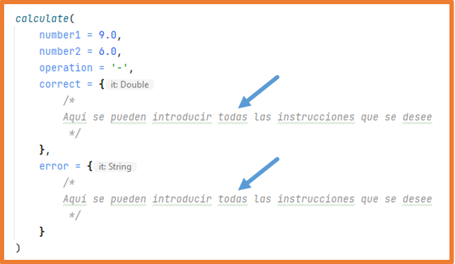
Lambdas vistas anteriormente
Anteriormente ya se ha hecho uso de funciones lambda como parámetros de otras funciones, exactamente como último parámetro de la función:
En la creación de arrays:
Lambdas en creación de arrays
En las funciones forEach, filter y map:
Lambdas en forEach
En las funciones de alcance:
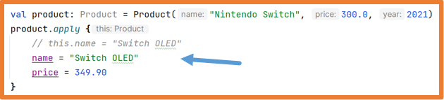 Lambdas en funciones de alcance
Uso de lambdas en Android
El uso de funciones lambda es muy importante en el desarrollo de aplicaciones móviles Android.
Sobre todo al usar Jetpack Compose como se verá en el tema siguiente.
Usando lambdas en Jetpack Compose